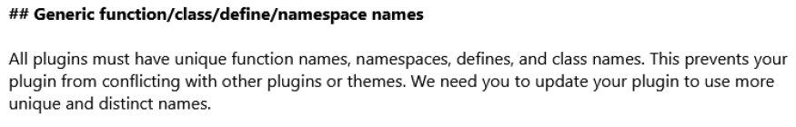

Gérer des sauvegardes
L'objectif de se projet était de créer un plugin capable de sauvegarder un site WordPress et sa BDD dans l'application NextCloud automatiquement.
On peut choisir la fréquence de sauvegarde, ainsi que le jour et l'heure. Cette sauvegarde sera stocké dans le dossier indiqué. En cas de problème avec son site WordPress, j'ai également développé la partie restauration.
Il suffit de choisir la sauvegarde puis cliquer sur restaurer. Si la sauvegarde voulu n'est pas proposé on peut aussi indiqué le chemin vers la sauvegarde voulu.
J'ai donc développé un plugin capable de sauvegarde et restaurer un site WordPress et sa BDD.
Vérifier le respect des règles d’utilisation des ressources numériques
Lors de mon stage, ma mission était de modifier le code du plugin afin de garantir sa conformité aux règles et normes de WordPress lors de sa mise en ligne sur la plateforme. Mon tuteur de stage avait déjà envoyé son code à WordPress pour le publier, mais ils ne l'ont pas accepté et lui ont envoyé un e-mail récapitulant toutes les règles que le code ne respecte pas.

On peut voir ici deux problème, le premier indiquant que les nom de classes/fonction ne sont pas assez unique et donc pourrait avoir des conflicts avec d'autres plugin et le deuxième indique qu'il faut utiliser l'API de WordPress pour faire les requête HTTP plutôt que cURL.
Le plugin étant à l'heure actuel disponible à l'utilisation, j'ai correctement respecté les règles concernant la mise en ligne des plugins WordPress.